Titanium Cage
킹 케이지의 이름이 된 첫 케이지. 가장 가볍고, 가장 오래 쓰는 케이지입니다. 로드부터 투어링, 커스텀 빌드까지 어느 자전거에나 어울립니다.
- Weight
- 약 31g
- Material
- Titanium Tube
- Mount
- 2-Bolt
- Bottle
- Standard Cycling Bottle

01
Brand
King CageDurango, Colorado · Since 1991
킹 케이지(King Cage)는 1991년 론 앤드루스(Ron Andrews)가 세운 물통 케이지 공방입니다. 프레임 공장에서 공구와 기계를 만들던 그에게 한 손님이 티타늄으로 물통 케이지를 만들어 달라고 했고, 그렇게 나온 첫 티타늄 케이지의 이름이 킹 케이지였습니다. 판매점들이 웃어넘길 줄 알았던 이 케이지에 주문이 들어오기 시작했고, 1996년에는 스테인리스 케이지가 더해졌습니다.
지금도 모든 케이지는 콜로라도 듀랑고(Durango)에 있는 론의 집 지하 작업실에서 만들어집니다. 소재는 모두 미국산이고, 튜브를 자르고 구부리고 용접하고 다듬는 일을 가족과 몇 명의 직원이 나눠 맡습니다. 기계로 찍어 낸 케이지가 아니라, 사람이 직접 만든 지그와 기계로 한 개씩 구부린 케이지입니다.

Built to Last
킹 케이지의 모양은 처음부터 거의 바뀌지 않았습니다. 물통 입구의 홈을 위에서 눌러 잡는 형태라, 거친 길에서도 물통이 튀어나가지 않습니다. 스테인리스 케이지는 물통에 검은 자국을 남기지 않고, 이제 레이저 용접으로 이음매를 더 작고 고르게 마감합니다.
무게만 좇는 케이지는 아닙니다. 물통을 잃어버리지 않는 것, 오래 타도 부러지지 않는 것, 어느 자전거에 달아도 어울리는 것. 그래서 커스텀 프레임 빌더들의 쇼 바이크에서도, 매일 타는 출퇴근 자전거에서도 킹 케이지를 자주 보게 됩니다.

1991년 한 손님의 부탁으로 만든 첫 티타늄 물통 케이지. 지금도 같은 모양으로 만듭니다.
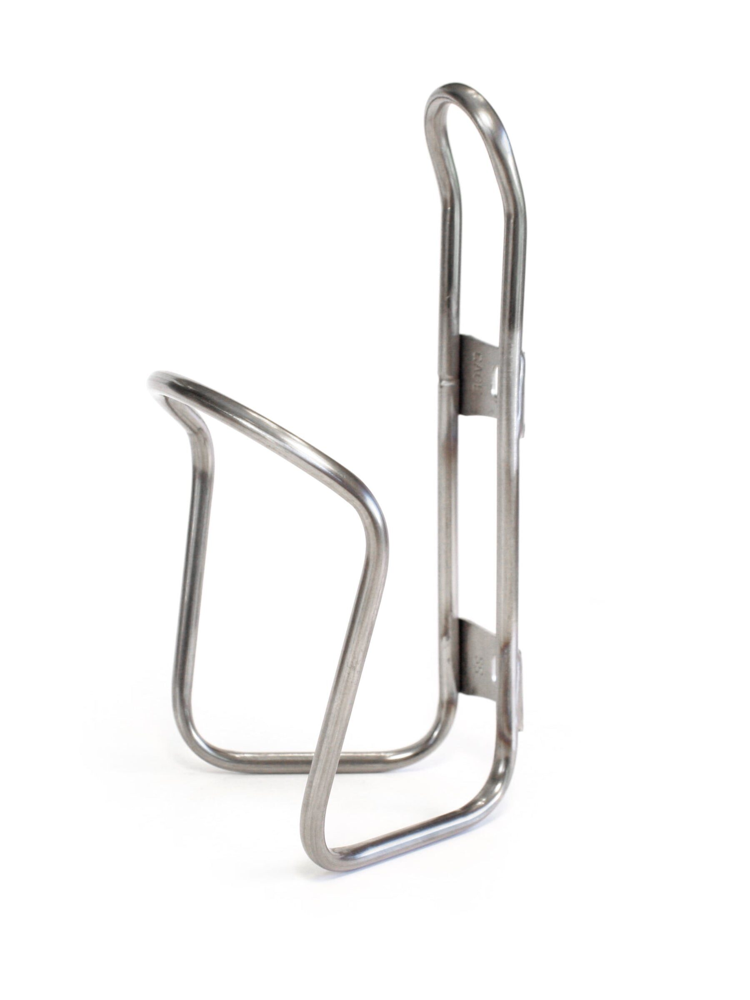
티타늄과 같은 모양을 스테인리스로. 물통에 자국을 남기지 않고, 이음매는 레이저로 용접합니다.

튜브를 자르고 구부리는 기계와 지그도 론이 직접 만들었습니다. 일주일에 수백 개를 이렇게 만듭니다.

아내 섀리가 포장과 출고를, 딸 타이야가 고객 응대를 맡는 가족 공방. 직원들도 듀랑고에서 함께 달리는 라이더들입니다.


Founder · Ron Andrews
“판매점들이 웃거나 전화를 끊을 줄 알았습니다. 그런데 몇 곳은 주문을 넣더군요.”
론 앤드루스는 팀 팻 챈스(Team Fat Chance) 소속으로 미국 동부 산악자전거 레이스를 달리던 선수였습니다. 자전거에서 내려서는 공학 학위를 살려 팻 시티 사이클(Fat City Cycles)과 아이비스(Ibis)에서 작은 프레임 공장의 생산 공정을 다듬었고, 멀린(Merlin), 조 브리즈(Joe Breeze), 예티(Yeti)를 거치며 미국 핸드메이드 자전거의 한가운데에서 일했습니다.
1990년 매사추세츠 서머빌에서 원오프 티타늄(One-Off Titanium)의 마이크 아우그스퍼거(Mike Augspurger)와 작업실을 나눠 쓰며 공구와 기계를 만들던 중, 한 손님이 티타늄 물통 케이지를 부탁했습니다. 티타늄을 물통 케이지에 쓰는 것은 당시로서는 엉뚱하고 까다로운 일이었지만, 론은 그 일을 해냈습니다.
1992년 예티에서 일하기 위해 듀랑고로 옮긴 뒤에도 낮에는 프레임을, 밤에는 차고에서 케이지를 만들었습니다. 그 차고가 지금의 킹 케이지 작업실입니다. 북미 핸드메이드 바이시클 쇼(NAHBS)에서는 부스에서 직접 튜브를 구부리는 모습으로 늘 사람들을 모았습니다.
론 앤드루스 (Ron Andrews), 킹 케이지 창립자King Cage
The Range
하나의 케이지에서 시작해, 자전거와 물통에 맞춰 조금씩 다르게.
1991년의 첫 케이지. 가볍고 단단한 티타늄 튜브를 손으로 구부린 기본형.
티타늄과 같은 모양의 스테인리스 케이지. 레이저 용접 조인트.
조금 더 꽉 잡는 우아한 곡선. 금속 물통과 다운튜브 장착에 좋은 케이지.
윗부분을 평평하게 바꿔 사이클링 물통 밖의 물통까지 받는 케이지.
옆으로 꺼내는 케이지. 풀서스펜션과 작은 프레임을 위한 해법.
같은 케이지에서 물통 높이만 바꾼 버전. 프레임백과 작은 프레임에.
큰 물통, 텐트, 침낭까지 포크에 싣는 티타늄 카고 케이지.
케이지를 달 자리를 만드는 마운트와 티타늄으로 만든 작은 물건들.
02
Standard Cage
Titanium · Stainless Steel티타늄 · 스테인리스 케이지
스탠다드 케이지는 킹 케이지의 기준입니다. 티타늄 케이지는 1991년 처음 나온 뒤로 내구성과 디자인의 기준이 되었고, 스테인리스 케이지는 1996년부터 거의 바뀌지 않은 모양으로 만들어지고 있습니다. 두 케이지 모두 튜브를 손으로 구부리고 용접해, 어떤 길과 어떤 라이딩에서도 물통을 단단히 붙잡습니다.
티타늄은 가볍고 녹슬지 않습니다. 스테인리스는 같은 모양을 더 합리적인 가격으로, 그리고 이제는 레이저 용접으로 더 작고 고른 이음매를 갖췄습니다. 둘 다 표준 사이클링 물통에 가장 잘 맞습니다.

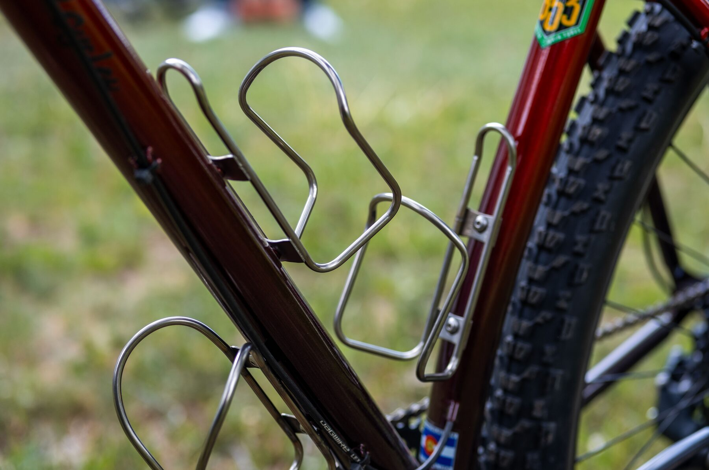
케이지 윗부분이 물통 입구 아래의 홈을 눌러 잡습니다. 그래블과 MTB의 진동에도 물통이 튀어나가지 않습니다.
론이 직접 만든 지그와 기계로 튜브를 한 단계씩 구부립니다. 공장에서 찍어 낸 케이지와는 다른, 사람의 손이 닿은 케이지입니다.
티타늄과 스테인리스 모두 미국에서 들여온 소재만 씁니다. 티타늄 케이지에는 King Cage Titanium 각인이 들어갑니다.
스테인리스와 티타늄 모두 물통에 검은 자국을 남기지 않습니다. 오래 써도 물통과 케이지가 함께 깨끗합니다.
킹 케이지의 이름이 된 첫 케이지. 가장 가볍고, 가장 오래 쓰는 케이지입니다. 로드부터 투어링, 커스텀 빌드까지 어느 자전거에나 어울립니다.
티타늄과 같은 모양을 스테인리스로 만든 케이지. 레이저 용접으로 이음매를 깔끔하게 마감했습니다. 처음 킹 케이지를 쓴다면 가장 쉬운 선택입니다.
Titanium Cage · On the bench티타늄
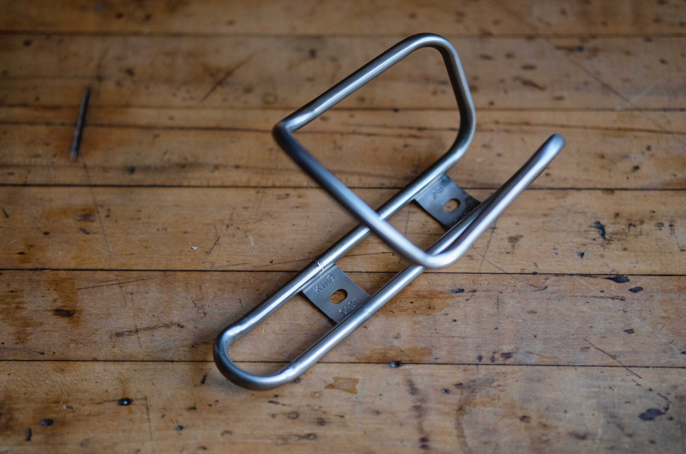
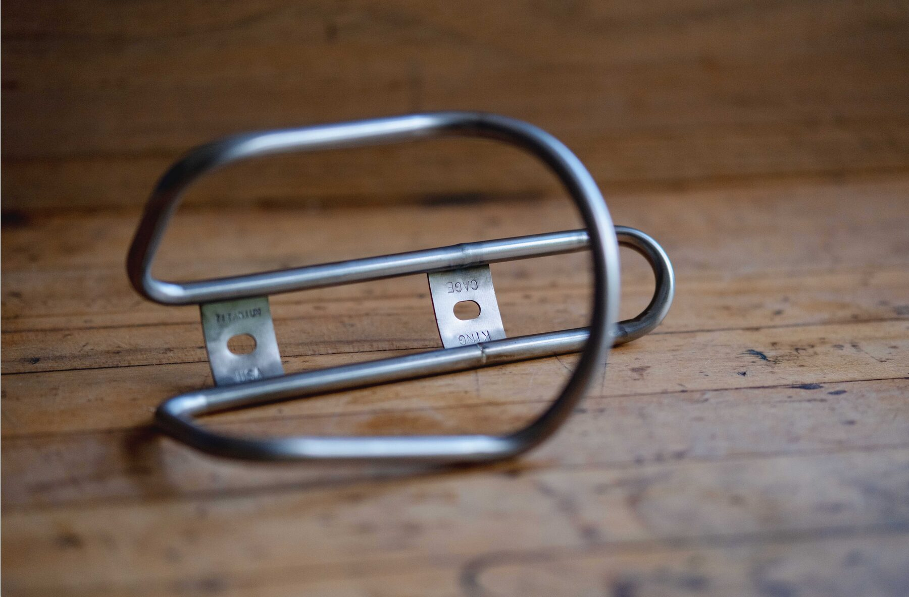
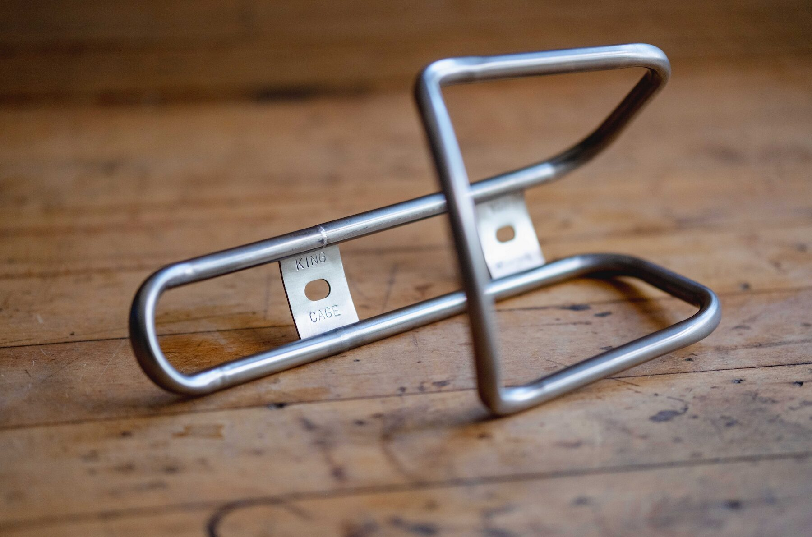

Stainless Steel Cage · Unchanged since 1996스테인리스
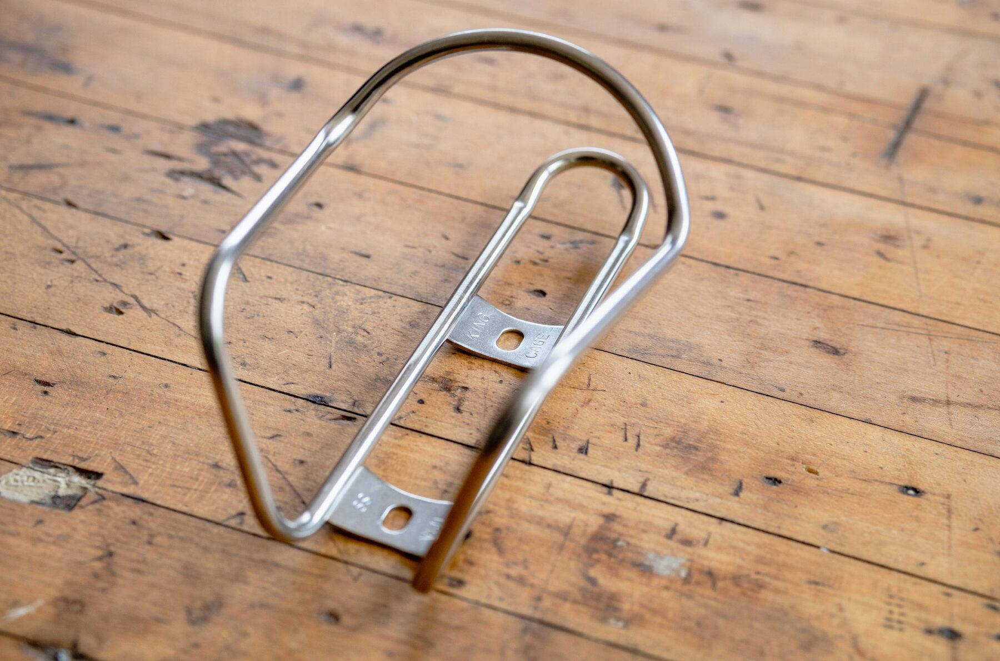
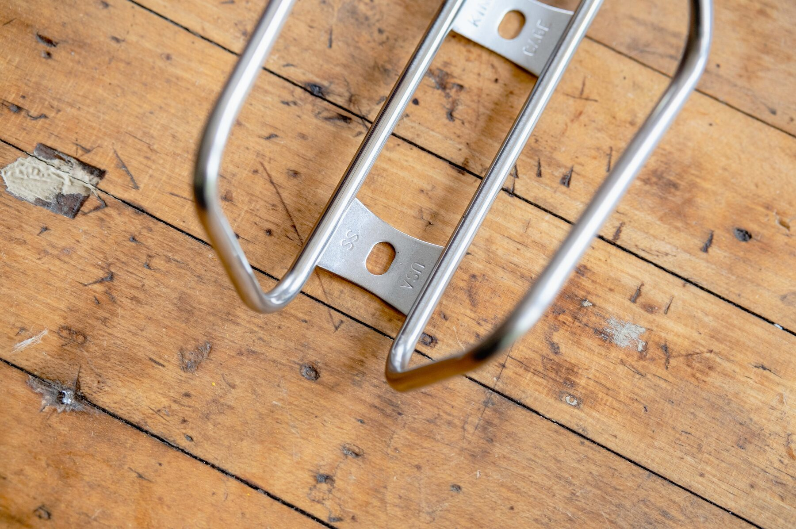
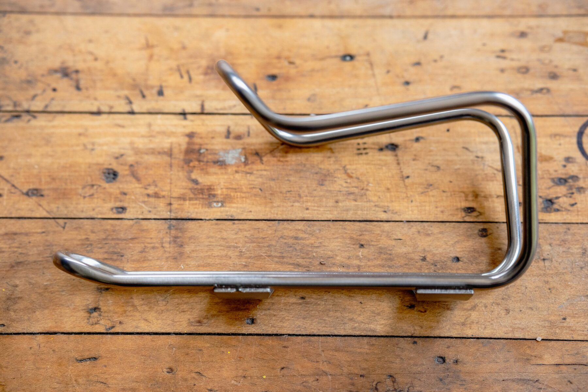

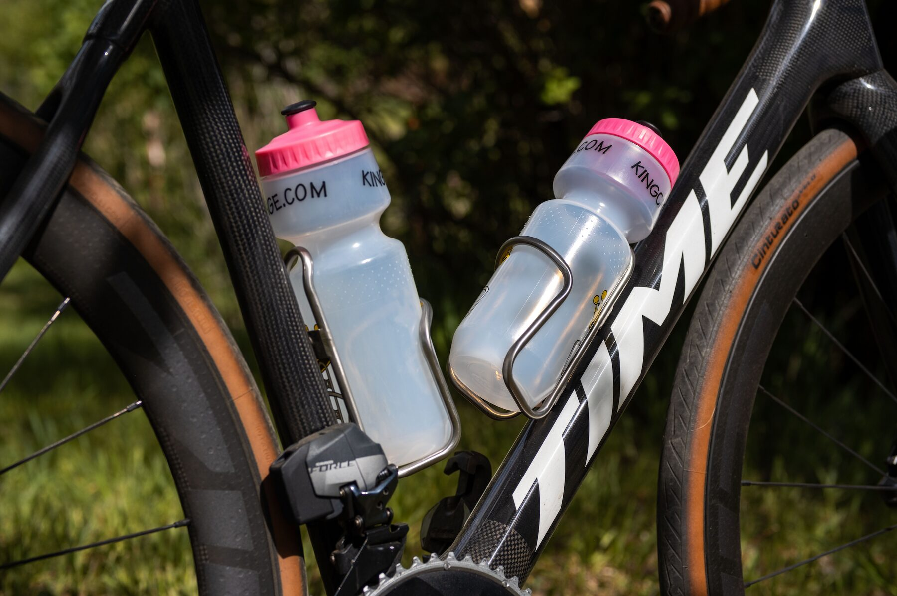
Lightweight yet Secure
티타늄 케이지는 가볍지만 물통을 헐겁게 잡지 않습니다. 케이지의 탄성이 물통을 감싸고, 윗부분이 홈을 눌러 고정합니다. 무게를 아끼는 로드 라이더에게도, 거친 길에서 물통을 잃고 싶지 않은 라이더에게도 같은 이유로 사랑받습니다.
티타늄 그대로의 색은 스틸, 티타늄, 카본 어느 프레임에도 어울립니다. 한 번 달면 자전거를 바꿀 때 함께 옮겨 다는 케이지가 됩니다.
03
For Every Bottle
Iris · Flat Top아이리스 · 플랫 탑
요즘은 사이클링 물통 대신 스테인리스 보온병이나 금속 물통을 들고 타는 라이더가 많습니다. 아이리스(Iris)와 플랫 탑(Flat Top)은 이런 물통을 위해 만든 케이지입니다. 표준 사이클링 물통은 물론, 바닥 지름 2.9인치(약 74mm)의 금속 물통까지 받습니다. 킹 케이지가 예로 드는 물통은 무버 18oz 퓨리스트, 클린캔틴, 하이드로플라스크입니다.
아이리스는 일반 케이지보다 조금 더 꽉 잡도록 설계해, 물통이 비스듬히 매달리는 다운튜브에서 특히 안정적입니다. 플랫 탑은 스탠다드 케이지의 모양을 그대로 두고 윗부분만 평평하게 바꿔, 입구 홈이 없는 물통도 받을 수 있게 했습니다.


속이 찬 티타늄 로드로 만든 아이리스. 아이리스의 곡선은 튜브로는 구부릴 수 없어 솔리드 로드를 씁니다. 그래서 무게는 스테인리스와 비슷하지만 무척 단단합니다.
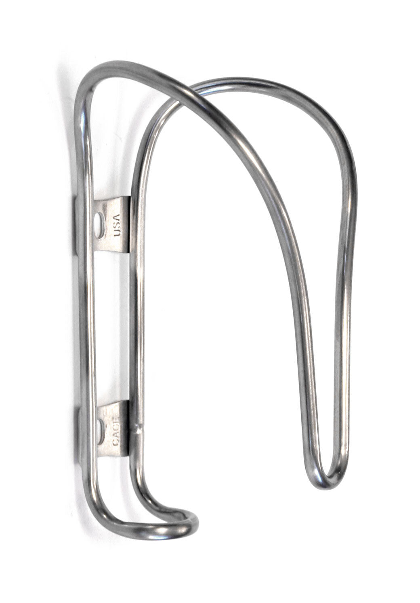
듀랑고 작업실에서 정밀 가공한 스테인리스 아이리스. 물통에 검은 자국을 남기지 않고, 조금 더 꽉 잡습니다.

스탠다드 티타늄 케이지의 모양에 평평한 윗부분. 가장 가볍게 금속 물통까지 받는 케이지입니다.

스테인리스 보틀 로어링 케이지에 플랫 탑을 더했습니다. 금속 물통을 받으면서 물통을 약 1.1인치 낮게 답니다.

Before You Ride
사이클링 물통이 아닌 물통을 쓸 때는 바닥 지름이 3인치(약 76mm)보다 작아야 합니다. 그보다 큰 날진이나 대용량 보온병은 매니씽 케이지가 맞습니다.
아이리스와 플랫 탑은 물통을 단단히 잡는 만큼, 도장된 금속 물통은 케이지에 닿는 부분의 칠이 긁힐 수 있습니다. 칠이 없는 스테인리스 물통이나 사이클링 물통이라면 걱정하지 않아도 됩니다.
04
Tight Spaces
Side Loader · Bottle Lowering사이드 로더 · 보틀 로어링 · 보틀 레이징
풀서스펜션 MTB, 작은 사이즈 프레임, 미니벨로, 프레임백을 단 투어링 바이크. 프레임 안이 좁으면 물통을 위로 뽑아 꺼내기가 어렵습니다. 킹 케이지는 같은 케이지의 방향과 높이를 바꿔 이 문제를 풉니다.
사이드 로더(Side Loader)는 물통을 옆으로 넣고 빼는 케이지입니다. 왼쪽, 오른쪽, 가운데 중 원하는 쪽으로 달 수 있고, 옆으로 꺼내는데도 물통은 프레임 가운데에 놓여 일반 케이지보다 밖으로 튀어나오지 않습니다. 보틀 로어링(Bottle Lowering)은 물통을 약 1.1인치(약 28mm) 낮게, 보틀 레이징(Bottle Raising)은 더 높게 달아 꺼내기 쉽게 합니다.


물통 입구 홈을 위에서 잡아 옆으로 꺼냅니다. 사이드 마운트로 달면 가운데 마운트 자리에 공구나 예비 타이어를 함께 묶을 수 있습니다.

호스 클램프로 묶으면 케이지 볼트가 없는 자전거에도 달 수 있습니다. 왼쪽, 오른쪽, 가운데 어디든.

마운트 위치를 옮겨 물통을 약 1.1인치 낮게 답니다. 작은 프레임이나 프레임백을 함께 쓸 때 좋습니다.
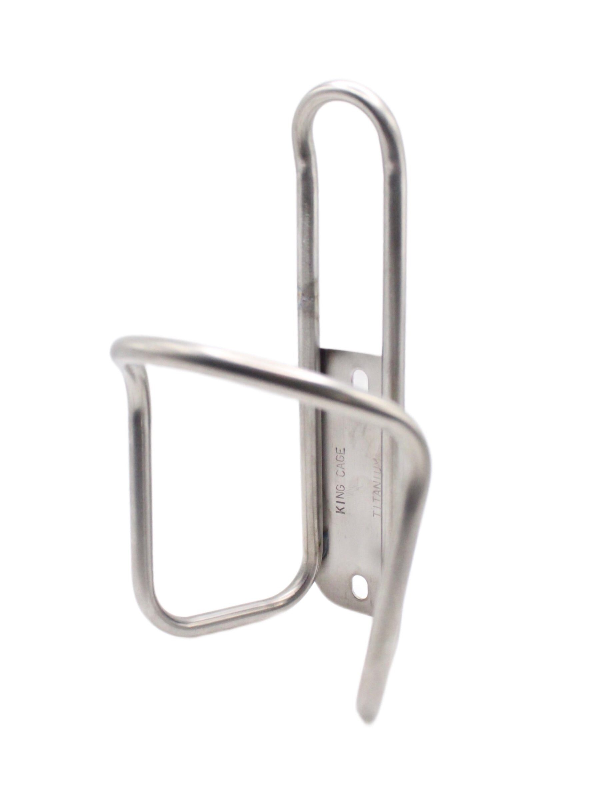
물통을 더 높게 달아 쉽게 꺼냅니다. 가장 아래 구멍의 중심이 물통 바닥과 정확히 맞도록 만들었습니다.

Lowering · Standard · Raising
세 케이지는 물통을 잡는 모양은 같고, 프레임에 닿는 마운트 위치만 다릅니다. 프레임의 케이지 볼트 위치는 그대로 두고 물통의 높이만 바꾸는 셈입니다.
탑튜브와 물통 사이가 좁아 물통이 걸린다면 로어링을, 물통이 너무 깊이 들어가 손이 닿기 어렵다면 레이징을 고르면 됩니다. 어느 쪽이 맞는지 모르겠다면 자전거 사진과 함께 루비워크샵에 문의해 주세요.
05
Bikepacking
Manything · Longer Thing매니씽 케이지 · 롱거씽 케이지
매니씽 케이지(Manything Cage)는 바이크패킹을 위한 티타늄 카고 케이지입니다. 날진이나 40oz 클린캔틴 같은 큰 물통, 텐트와 침낭, 매트, 연료까지 포크나 다운튜브에 싣습니다. 친구 집 저녁 식사에 와인 한 병을 들고 갈 때도 좋다는 것이 킹 케이지의 설명입니다.
강도가 가장 높은 솔리드 로드와 더 가벼운 튜브, 두 가지 티타늄으로 만들고, 킹 케이지 로고가 들어간 오렌지색 볼레(Voile) 스트랩을 함께 고를 수 있습니다. 더 긴 짐을 위한 롱거씽 케이지(Longer Thing Cage)는 마운트가 하나 더 있어 더 무거운 짐을 받칩니다.

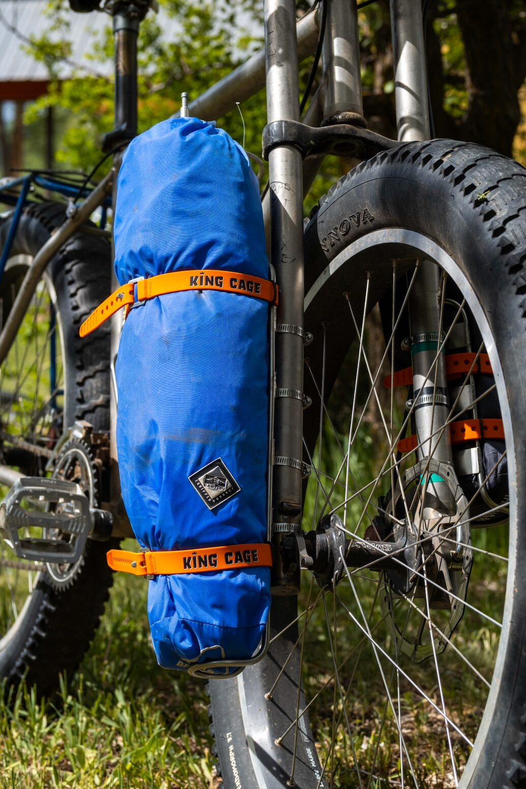

큰 물통과 바이크패킹 짐을 위한 기본형. 세 개의 마운트 구멍에 모두 볼트를 채우는 것을 권합니다.

매니씽을 길게 늘린 버전. 텐트, 물통 두 개, 겹쳐 넣은 캠핑 쿡웨어, 낚싯대까지 긴 짐을 싣습니다.

스트랩은 함께 오는 1인치 오링 네 개로 케이지에 고정합니다. 오링은 EPDM 소재, 내경 25mm라 쉽게 바꿀 수 있습니다.
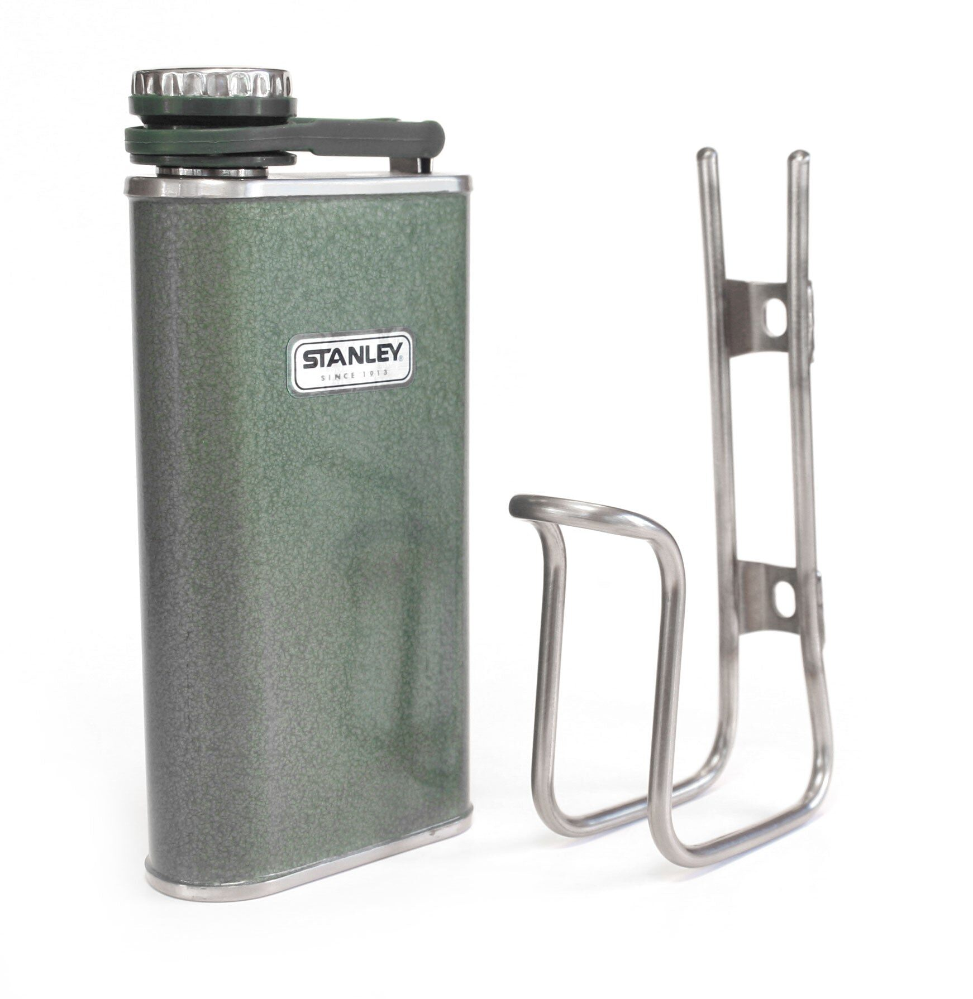
스탠리 클래식 8oz 플라스크를 위한 스테인리스 케이지. 라이딩 끝의 한 모금을 위한 케이지입니다. 플라스크는 별도.
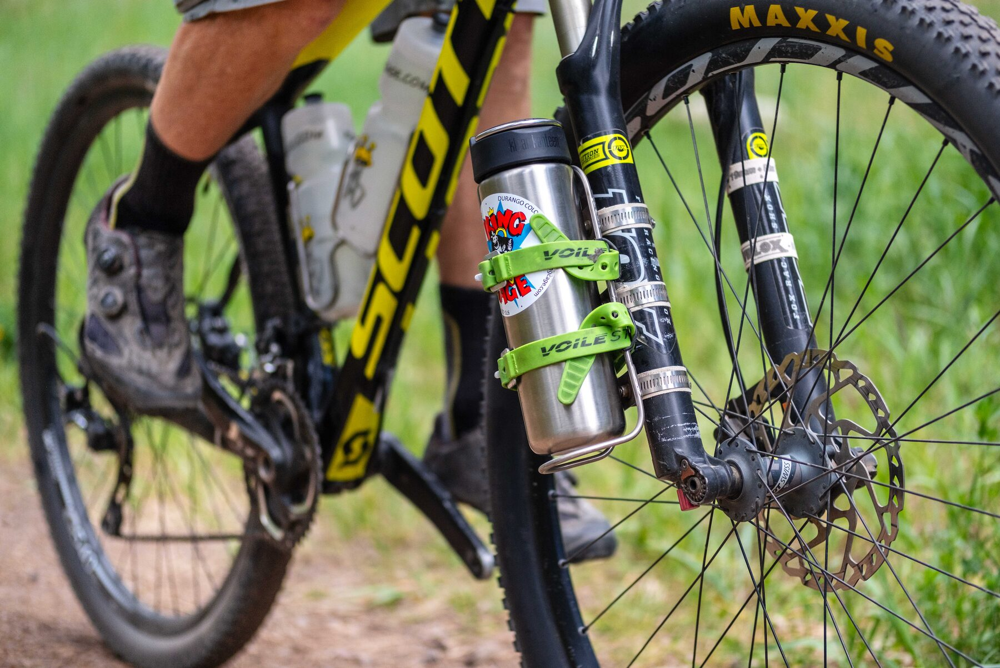
How Much It Holds
킹 케이지는 매니씽 케이지를 물 2리터 무게까지 시험했습니다. 실을 수 있는 무게는 라이딩 종류에 따라 다르고, 가벼운 매트나 경량 텐트 같은 바이크패킹 짐에 특히 잘 맞습니다. 마운트가 하나 더 있는 롱거씽은 더 무거운 짐도 받칩니다.
모든 마운트 구멍에 볼트를 채워야 시험한 강도가 나옵니다. 포크에 구멍이 모자라면 유니버설 서포트 볼트로 부족한 자리를 받쳐 주세요.
06
Mounts · Small Goods
TCCM · USB탑캡 케이지 마운트 · 유니버설 서포트 볼트
탑캡 케이지 마운트(Top Cap Cage Mount)는 스템의 탑캡을 바꿔 끼워 핸들 앞에 케이지를 다는 알루미늄 마운트입니다. 허리를 숙이지 않고 물을 마시고 싶을 때, 물통을 하나 더 달고 싶을 때, 프레임이 작아 케이지를 달 수 없을 때 좋습니다. 탑캡 방식의 스템이라면 대부분의 케이지와 맞습니다.
유니버설 서포트 볼트(Universal Support Bolt)는 볼트 구멍이 없는 튜브에 케이지를 다는 클램프입니다. 핸들바와 시트스테이부터 서스펜션 포크와 굵은 알루미늄 튜브까지, 6가지 크기 중 장착할 자리의 지름에 맞춰 고릅니다.


기존 탑캡 대신 끼우는 케이지 마운트. 설치가 간단하고, 핸들 앞에 물통이 있어 달리면서 꺼내기 쉽습니다.
스테인리스 밴드 클램프에 케이지 볼트를 더한 마운트. 한 개씩 판매하며, 케이지 하나에는 보통 두 개가 필요합니다.
유니버설 서포트 볼트 크기는 최대 지름 기준입니다. 끈으로 장착할 자리의 둘레를 재고 3.14로 나누면 지름이 나옵니다. 1 1/8인치는 핸들바와 시트스테이(최소 지름 3/4인치), 1 3/8인치는 스틸 프레임과 포크, 1 5/8인치는 32mm 서스펜션 포크, 2인치는 알루미늄 튜브와 36mm 서스펜션 포크, 2 1/4 · 2 1/2인치는 더 굵은 튜브에 맞습니다. 프레임은 전기 테이프나 천 림테이프로 감싸 보호하고(고무 튜브는 클램프가 부러질 수 있어 피해 주세요), 테이퍼드 포크에는 쓰지 마세요. 클램프가 조금만 풀려도 아래로 미끄러져 바퀴에 닿을 수 있습니다. 랙을 다는 용도로는 권하지 않습니다.
Titanium Goods
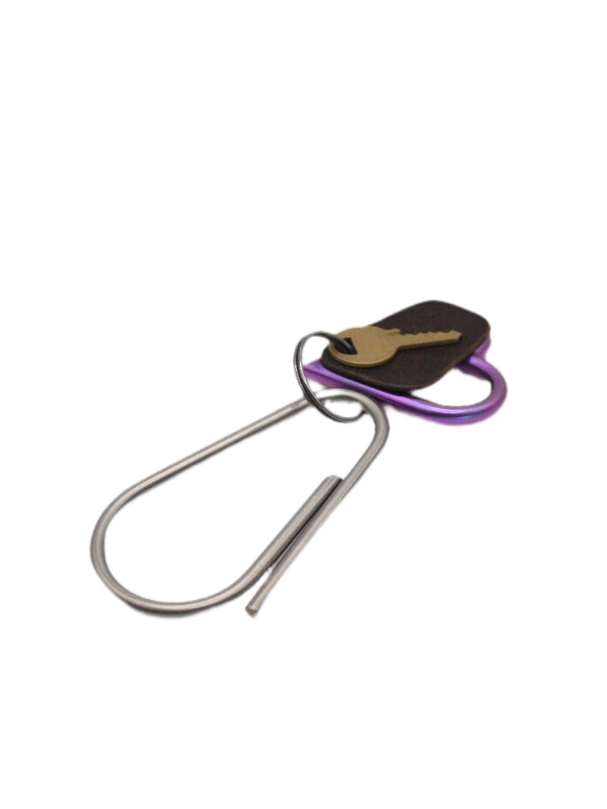
솔리드 티타늄 로드로 구부린 키링. 손에 잘 잡히고, 열쇠를 끼우고 빼기 쉬운 모양입니다.
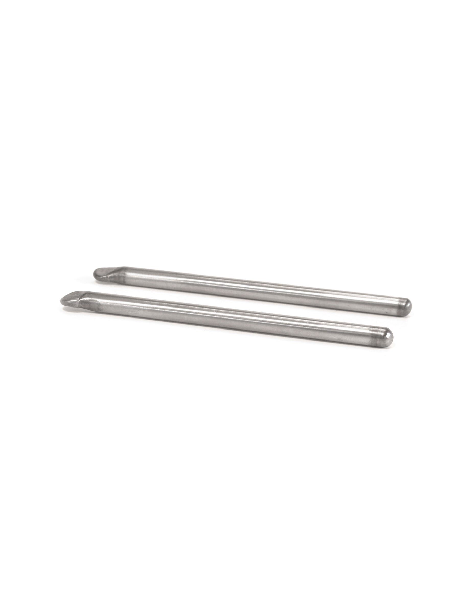
티타늄으로 만든 타이어 레버. 무척 튼튼하지만 거칠게 쓰면 림에 흠이 날 수 있어 조심해서 다뤄 주세요.

케이지와 같은 1/4인치 티타늄 튜브로 만든 빨대. 6인치 일자, 8인치 꺾임, 10인치 일자, 세척솔 포함.

물통 케이지의 윗부분을 닮은 티타늄 병따개. 라이딩이 끝난 뒤의 작은 즐거움입니다.
07
Cage Guide
어떤 물통을 쓰는지, 프레임 안에 공간이 얼마나 있는지에 따라 고르면 됩니다.
사이클링 물통이 아닌 물통은 바닥 지름이 3인치(약 76mm)보다 작아야 아이리스와 플랫 탑에 들어갑니다. 무게는 킹 케이지 공식 스토어 기준 약값이며 개체마다 조금씩 다를 수 있습니다. 내 자전거와 물통에 맞는 케이지가 궁금하다면 자전거와 물통 사진을 함께 루비워크샵에 보내 주세요.
08
Story
1990 ~ TodaySomerville · Durango
한 손님의 부탁으로 만든 티타늄 케이지 하나가 30년 넘게 이어진 가족 공방이 되었습니다. 킹 케이지는 큰 공장으로 옮기지 않고, 지금도 처음과 같은 방식으로 한 개씩 만듭니다.

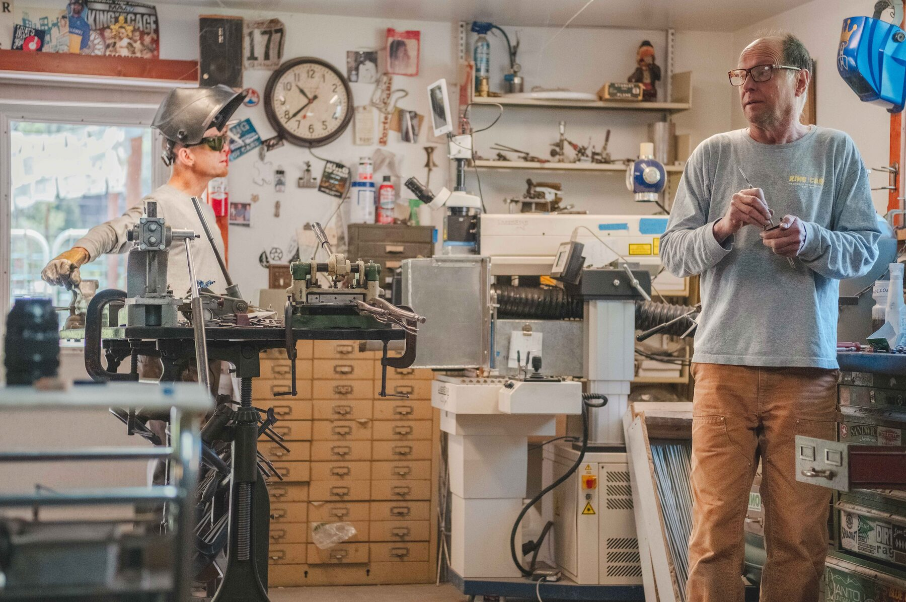
팀 팻 챈스의 MTB 레이서였던 론 앤드루스가 팻 시티 사이클과 아이비스에서 프레임 생산 공정을 다듬습니다.
서머빌에서 원오프 티타늄의 마이크 아우그스퍼거와 작업실을 나눠 쓰며 프레임 공장용 공구와 기계를 만듭니다.
손님의 부탁으로 첫 티타늄 물통 케이지를 만들고, 그 이름을 킹 케이지라 붙입니다. 판매점들의 주문이 이어집니다.
예티 사이클에서 일하기 위해 콜로라도 듀랑고로 옮깁니다. 밤에는 차고에서 케이지를 만듭니다.
스테인리스 케이지를 내놓습니다. 이 모양은 지금까지 거의 바뀌지 않았습니다.
북미 핸드메이드 바이시클 쇼에서 부스에 기계를 놓고 직접 케이지를 구부리며 관람객을 모읍니다.
사이드 로더, 아이리스, 매니씽으로 라인업을 넓히고, 가족과 직원들이 함께 듀랑고 지하 작업실을 지킵니다.
The King Cage Team

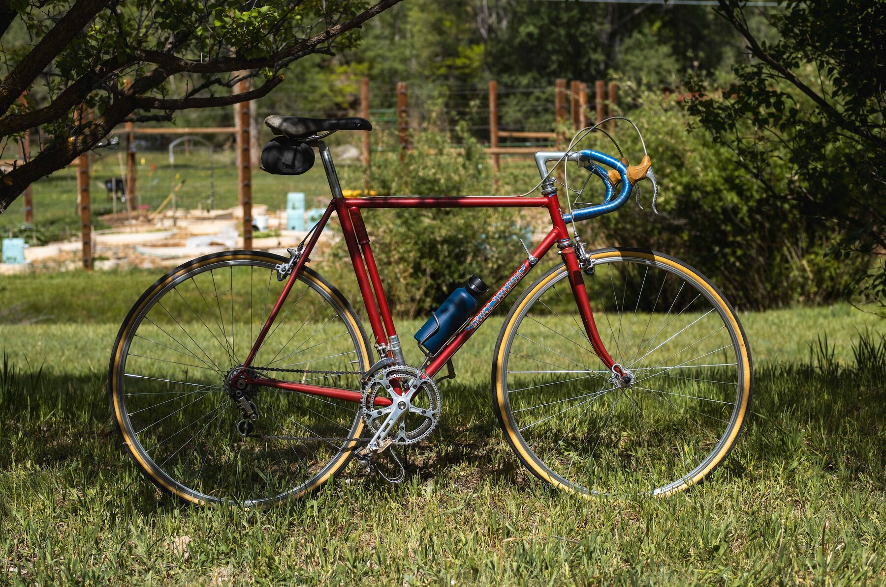
09 · Showroom
손으로 구부린 곡선과 용접 자국은 직접 봐야 압니다. 루비워크샵에서 킹 케이지를 직접 보고, 자전거의 프레임과 쓰는 물통에 맞는 케이지와 장착 방법을 함께 정해 드립니다.
For Dealers
킹 케이지 매장 입점과 거래 조건은 루비컴퍼니의 B2B 채널 루비서플라이로 문의해 주세요.